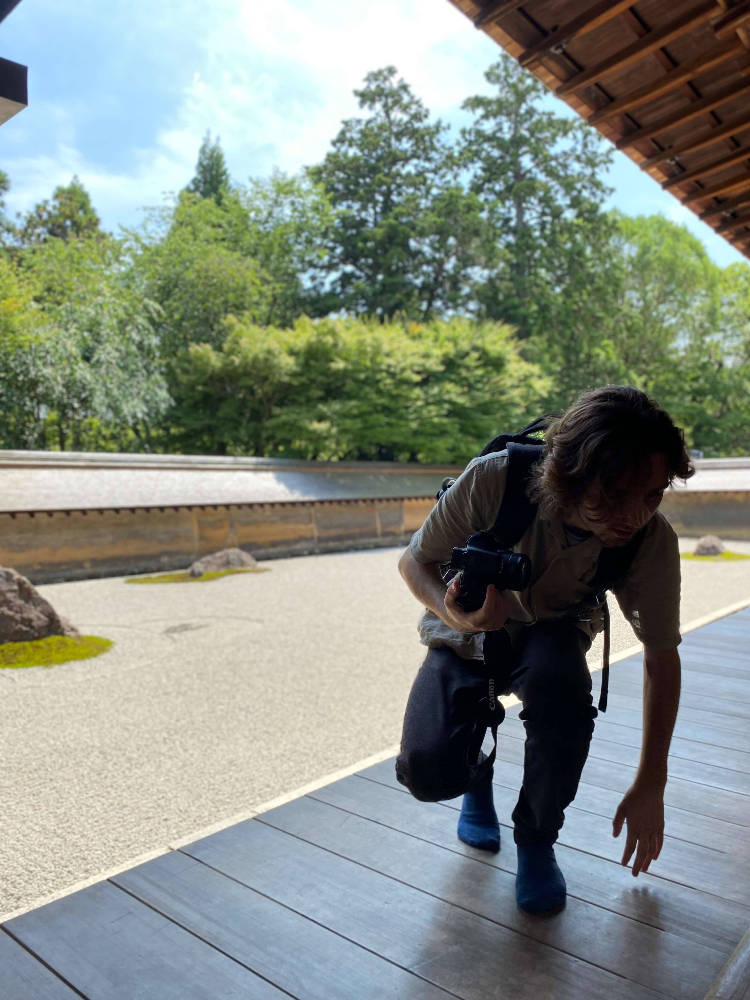
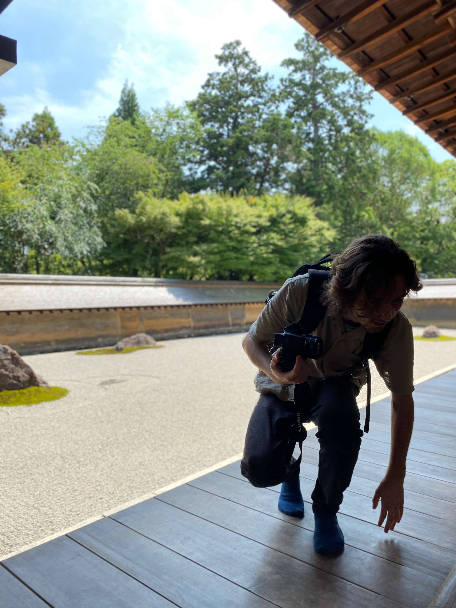

Onze volgende bestemming was Kyoto, hier hebben we in verschillende delen van de stad in hotelletjes gezeten en flink wat cultuur gesnoven want wauw Kyoto staat vol tempels en oude huizen. Hier hebben wij een dag lang zo veel mogelijk bijzonderheden bezocht. Ik kan me de namen echt niet meer herinneren maar de foto’s spreken van zich
 
